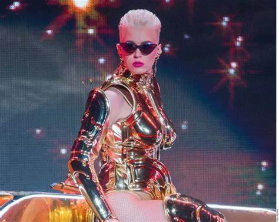

- "Dark Horse" con Juicy J: Una canción que combina el estilo urbano de Juicy J con la energía pop de Katy Perry.
- "Swish Swish" con Nicki Minaj: Un tema dance que muestra la química entre Katy Perry y Nicki Minaj.
- "E.T." con Kanye West: Una colaboración que fusiona el estilo electrónico con el hip-hop.
- "Who You Love" con John Mayer: Una balada country que muestra la química vocal entre Katy Perry y John Mayer.
- "Feels" con Calvin Harris, Pharrell Williams y Big Sean: Un tema veraniego que combina el estilo dance con el funk.
